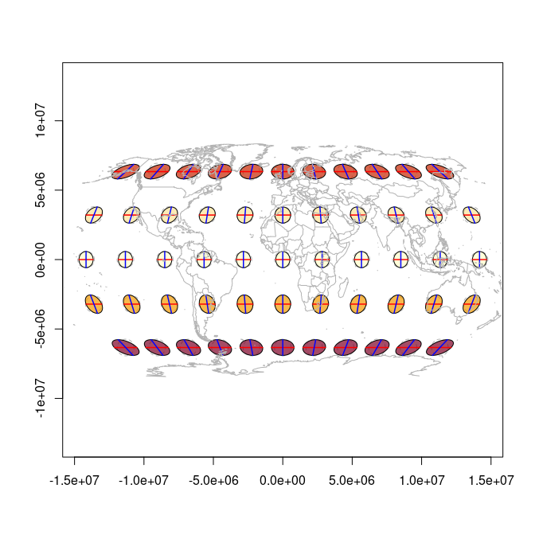
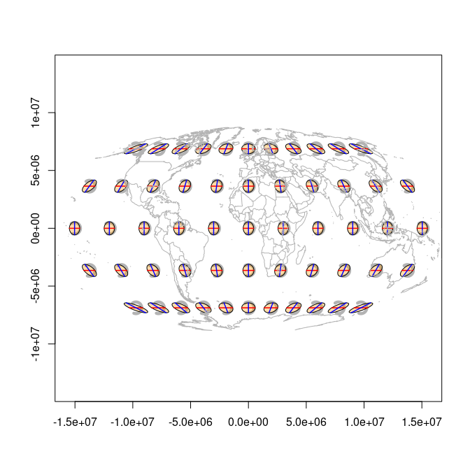
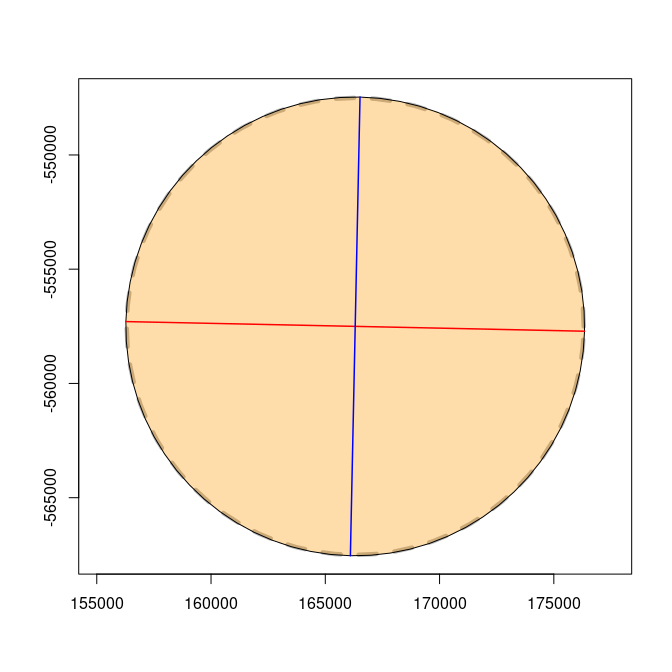
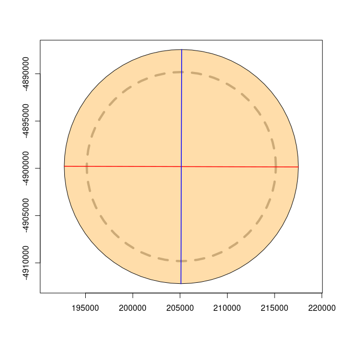
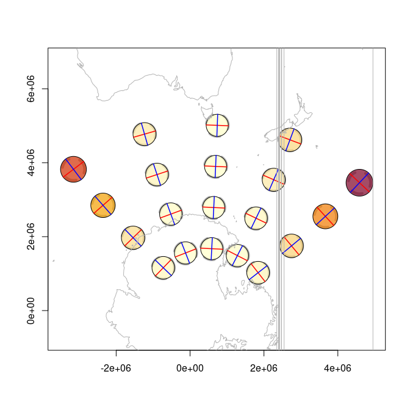
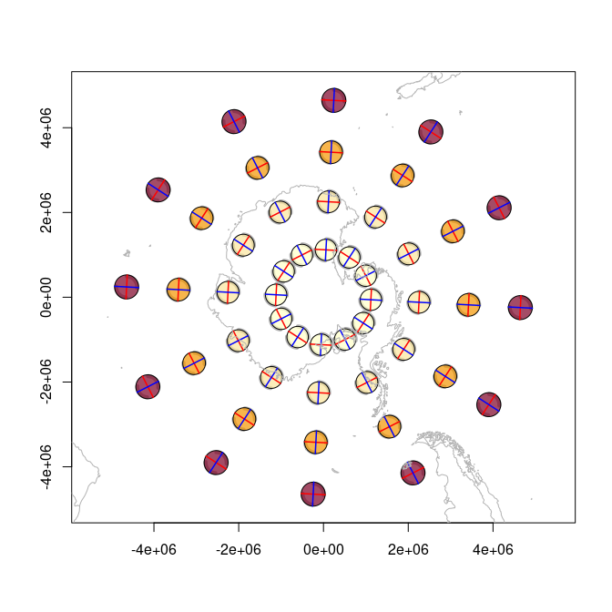
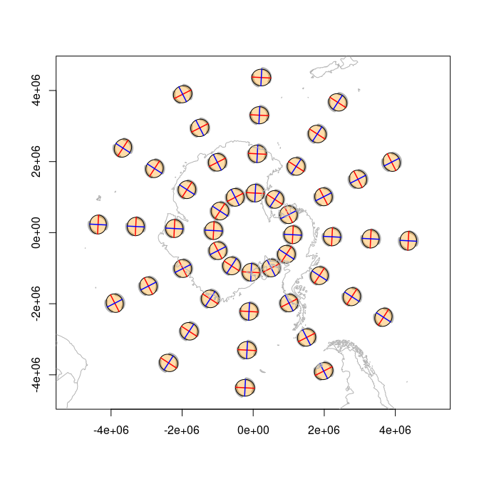
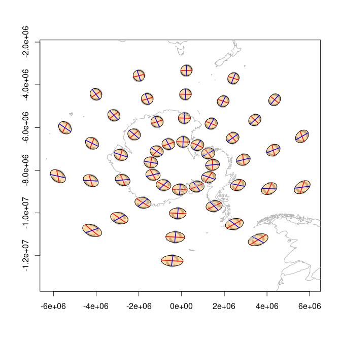

The Tissot Indicatrix characterizes local distortion in map projections. This package computes and plots indicatrixes using a vectorized finite-difference Jacobian with gdalraster as the projection engine.
Derived (with permission) from Bill Huber’s GIS StackExchange answer.
Installation
# install.packages("pak")
pak::pak("hypertidy/tissot@refactor-2026")Quick start
tissot() returns a tibble of distortion properties. The second argument is the projection target; source defaults to EPSG:4326:
library(tissot)
tissot(c(147, -42), "+proj=utm +zone=55 +south")
#> Tissot indicatrix: 1 point, +proj=utm +zone=55 +south
#> # A tibble: 1 × 14
#> x y dx_dlam dy_dlam dx_dphi dy_dphi scale.h scale.k scale.omega
#> <dbl> <dbl> <dbl> <dbl> <dbl> <dbl> <dbl> <dbl> <dbl>
#> 1 147 -42 0.99960 -5.8386e-7 0 0.99960 0.99960 0.99960 0.000033471
#> # ℹ 5 more variables: scale.a <dbl>, scale.b <dbl>, scale.area <dbl>,
#> # angle_deformation <dbl>, convergence <dbl>Columns include: scale.h (meridional), scale.k (parallel), scale.a / scale.b (max/min singular values), scale.area, angle_deformation, and convergence.
Plotting indicatrixes
indicatrix() builds plottable ellipses. The dashed circle is the undistorted reference; the filled ellipse shows the projection’s distortion:
xy <- expand.grid(seq(-150, 150, by = 30), seq(-60, 60, by = 30))
r <- tissot(xy, "+proj=robin")
ii <- indicatrix(r)
plot(ii, scale = 6e5, add = FALSE, show.axes = TRUE, show.circle = TRUE)
tissot_map()
#> Warning in .transform_xy(pts_in, srs_from, srs_to): 1972 point(s) had missing
#> values, NA returned in that case
Colour-coded distortion
Pass fill.by to colour ellipses by a distortion metric:
plot(ii, scale = 6e5, add = FALSE, fill.by = "scale.area")
tissot_map()
#> Warning in .transform_xy(pts_in, srs_from, srs_to): 1972 point(s) had missing
#> values, NA returned in that case
Projection comparison
m <- tissot(xy, "+proj=moll")
plot(indicatrix(m), scale = 5e5, add = FALSE)
tissot_map()
#> Warning in .transform_xy(pts_in, srs_from, srs_to): 1972 point(s) had missing
#> values, NA returned in that case
merc_xy <- expand.grid(seq(-150, 150, by = 30), seq(-75, 75, by = 15))
me <- tissot(merc_xy, "+proj=merc")
plot(indicatrix(me), scale = 5e5, add = FALSE)
tissot_map()
#> Warning in .transform_xy(pts_in, srs_from, srs_to): 1972 point(s) had missing
#> values, NA returned in that case
Rich single-indicatrix plots
A single indicatrix with axes and reference circle:
ii2 <- indicatrix(c(147, -42), "+proj=lcc +lat_1=-36 +lat_2=-38 +lat_0=-37 +lon_0=145")
plot(ii2[[1]], scale = 1e4, add = FALSE, show.axes = TRUE, show.circle = TRUE)
ii3 <- indicatrix(c(147, -42), "+proj=lcc +lat_1=-15 +lat_2=5 +lat_0=0 +lon_0=145")
plot(ii3[[1]], scale = 1e4, add = FALSE, show.axes = TRUE, show.circle = TRUE)
Arbitrary projections
Lambert Conformal Conic
pxy <- expand.grid(seq(100, 200, by = 25), seq(-75, -45, by = 10))
p <- tissot(pxy, "+proj=lcc +lat_0=-60 +lon_0=147 +lat_1=-70 +lat_2=-55")
plot(indicatrix(p), scale = 3e5, add = FALSE, fill.by = "scale.area")
tissot_map()
#> Warning in .transform_xy(pts_in, srs_from, srs_to): 1972 point(s) had missing
#> values, NA returned in that case
Universal Transverse Mercator
qxy <- expand.grid(seq(100, 200, by = 25), seq(-75, -45, by = 10))
p <- tissot(qxy, "EPSG:32755")
plot(indicatrix(p), scale = 3e5, add = FALSE, fill.by = "scale.area")
tissot_map()
#> GDAL FAILURE 1: Point outside of projection domain
#> GDAL FAILURE 1: Point outside of projection domain
#> GDAL FAILURE 1: Point outside of projection domain
#> GDAL FAILURE 1: Point outside of projection domain
#> GDAL FAILURE 1: Point outside of projection domain
#> GDAL FAILURE 1: Point outside of projection domain
#> GDAL FAILURE 1: Point outside of projection domain
#> GDAL FAILURE 1: Point outside of projection domain
#> Warning in .transform_xy(pts_in, srs_from, srs_to): 8 point(s) failed to
#> transform, NA returned in that case
#> Warning in .transform_xy(pts_in, srs_from, srs_to): 1972 point(s) had missing
#> values, NA returned in that case
Polar projections
In any projection we should refer to a regular grid of points in it’s crs, else we get weird situations like this, more obvious on an actual pole:
polar_xy <- expand.grid(seq(-180, 150, by = 30), seq(-80, -50, by = 10))
p <- tissot(polar_xy, "+proj=stere +lat_0=-90 +lon_0=147")
plot(indicatrix(p), scale = 2.5e5, add = FALSE, fill.by = "scale.area")
tissot_map()
#> Warning in .transform_xy(pts_in, srs_from, srs_to): 1972 point(s) had missing
#> values, NA returned in that case
la <- tissot(polar_xy, "+proj=laea +lat_0=-90 +lon_0=147")
plot(indicatrix(la), scale = 2.5e5, add = FALSE)
tissot_map()
#> Warning in .transform_xy(pts_in, srs_from, srs_to): 1972 point(s) had missing
#> values, NA returned in that case
If we push away from the pole in Lambert Azimuthal Equidistant it’s useful to see what happens.
lea <- tissot(polar_xy, "+proj=aeqd +lat_0=-20 +lon_0=147")
plot(indicatrix(lea), scale = 2.5e5, add = FALSE)
tissot_map()
#> Warning in .transform_xy(pts_in, srs_from, srs_to): 1972 point(s) had missing
#> values, NA returned in that case
Far better is to generate a grid in the crs we are assessing.
op <- par(mfrow = c(1, 2))
ext <- c(-180, 150, -80, -50)
crs <- "+proj=stere +lat_0=-90 +lon_0=147"
projext <- gdalraster::bbox_transform(ext[c(1, 3, 2, 4)], srs_to = crs, srs_from = "EPSG:4326")
polar <- expand.grid(seq(projext[1L], projext[3L], by = 30 * 1e5), seq(projext[2], projext[4], by = 10 * 1e5))
polar_xy <- gdalraster::transform_xy(polar, srs_to = "EPSG:4326", srs_from = crs)
p <- tissot(polar_xy, crs, source = "EPSG:4326")
plot(indicatrix(p), scale = 2.5e5, add = FALSE, fill.by = "scale.area")
tissot_map()
#> Warning in .transform_xy(pts_in, srs_from, srs_to): 1972 point(s) had missing
#> values, NA returned in that case
ext <- c(-180, 150, -80, -50)
crs <- "+proj=laea +lat_0=-90 +lon_0=147"
projext <- gdalraster::bbox_transform(ext[c(1, 3, 2, 4)], srs_to = crs, srs_from = "EPSG:4326")
polar <- expand.grid(seq(projext[1L], projext[3L], by = 30 * 1e5), seq(projext[2], projext[4], by = 10 * 1e5))
polar_xy <- gdalraster::transform_xy(polar, srs_to = "EPSG:4326", srs_from = crs)
p <- tissot(polar_xy, crs, source = "EPSG:4326")
plot(indicatrix(p), scale = 2.5e5, add = FALSE, fill.by = "scale.area")
tissot_map()
#> Warning in .transform_xy(pts_in, srs_from, srs_to): 1972 point(s) had missing
#> values, NA returned in that case
Distortion summary
summary(r)
#> Tissot indicatrix: 55 points
#> Source CRS: EPSG:4326
#> Target CRS: +proj=robin
#> Areal scale: min=0.8209 max=1.2790 mean=1.0468
#> Angular def: min=1.5058 max=52.3188 mean=21.3786 deg
#> Scale h: min=0.8790 max=1.3023 (meridional)
#> Scale k: min=0.8487 max=1.3521 (parallel)Why this package?
Most “Tissot indicatrix” plots you’ll find online are just geographic circles drawn on the map. They show what happens to a circle under the projection, which is useful — but it’s not the indicatrix. The indicatrix is the Jacobian of the projection at a point: it gives you actual scale factors, angular deformation, and areal distortion. This package computes those.
Other examples: mgimond.
Code of Conduct
Please note that the tissot project is released with a Contributor Code of Conduct. By contributing to this project, you agree to abide by its terms.